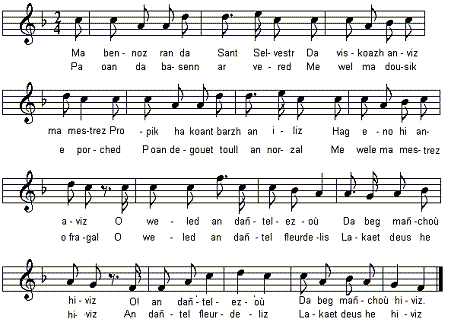

Son amour
Chanson d'amour
Love song
Chant collecté par Théodore Hersart de La Villemarqué
dans le 1er Carnet de Keransquer (pp. 44 et 147).

Mélodie: "Son an amourousted"
|
A propos de la mélodie: Inconnue. Remplacée ici par "Son an amourousted" tiré de "Tralalalaleno", recueil de 30 chansons harmonisées, par Jef Le Penven ; publié en 1949 (source: le site de M. Pierre Quentel (voir "liens"). Bibliographie La Villemarqué est le seul à avoir collecté cette chanson. Il a utilisé les vers en gras dans son chant Hollaïka Une version un peu différente de ce chant fut consignée, après 1863, dans le carnet de collecte N°3. Remarques Est-ce à dire que la chanson fut composée avant la Révolution? Certainement pas! Le "costume de paysan", porté par-dessus des habits aristocratiques, tel qu'il est décrit dans les strophes 18 à 21 de la Complainte de Pontcallec (exécuté en mars 1720) n'est pas propre à la paroisse ou au canton: c'est un costume de classe sociale. De même "dans les procès-verbaux d'arrestation ou dans les notes signalétiques des chouans, rédigées par les autorités républicaines, on lit rarement 'un tel portant le costume de Briec, de Guéméné, etc.', mais plutôt 'un tel en habit de paysan'. Il n'est donc pas encore vraiment question, à cette époque, de costumes représentant tel ou tel groupe particulier..." (R.Y. Creston, ouvr. cité). C'est la Révolution, qui abolit ces restrictions vestimentaires et l'Empire qui brassa les hommes de toutes les régions en leur faisant connaître les modes vestimentaires de régions lointaines qui sont à l'origine des costumes bretons modernes. L'intensification des moyens de transport, le développement de l'industrie, acheminèrent vers la Bretagne quantités d'objets fabriqués, d'étoffes, de broderies, de rubans qui permirent la multiplication des modes vestimentaires. |
About the tunes Unknown. Replaced here by "Son an amourousted", from "Tralalalaleno", a collection of 30 songs arranged by Jef Le Penven, and published in 1949 (source: the site of M. Pierre Quentel (see "links"). Bibliography La Villemarqué is the only collector of this song. He used the lines in bold characters in his song Hollaïka A slightly different version of this song was recorded, after 1863, in collection book N ° 3. Remarks Does it mean that the song was composed before the French Revolution? By no means! The "peasant's dress", worn above his aristocrat's underwear, as described in stanzas 18 with 21 of The Death of Pontcallec (who was beheaded in March 1720) is not peculiar to a specific parish or neighbourhood: it is the garment of a specific social class. Similarily, "in the arrest records or the identification sheets written up by Republican police officers during the Chouan uprising, we seldom read 'citizen so-and-so wearing the Briec, or the Guéméné, etc. dress', yet 'citizen so-and-so clothed as a peasant'. Back then there were not yet costumes peculiar to specific geographic groups..." (R.Y. Creston, ibidem). It is the Revolution, when abolishing these class clothing rules and the Empire when bringing together men from all provinces and sending them to remote countries where they became acquainted with all sorts of dresses, which should be considered the source of the modern Breton costumes. The intensification of the means of transport, the development of industry, conveying to Brittany all sorts of artefacts, cloth, embroideries, ribbons etc. enabled this remarkable increase in the number of local dresses. |
|
BREZHONEK p. 44 1. Va bennoz a ran da Zant Selevestr. Da vizkoazh anave(z)is va mestrez Propik ha koant barzh an ilis Hag eno hi a anave(z)is O weled an dañtellezoù Da beg manchoù-hiviz. O an dañtellezoù Da beg manchoù-hiviz. 2. Pa oan da basenn ar vered Me wel va dousik er porched. Pa oan degouet toull an nor-zal Me wel va mestrez o fragall, Weled an dañtell fleurde lis Lakaet demeus he hiviz. 3. Tre oan gant an oferenn-bred Me ne ren ket nemet selled. Seul vuioc'h-vui outi sellen Seul gwelloc'h-vui a blije din. Seul vuioc'h-vui outi sellen Seul gwelloc'h-vui a blije din. p.147 4. Ha me en ur dremen outi A roe un diamañt dezhi. - Dallit, dallit va servijer Setu, setu amañ ul levr! Ul levr a zo ken kaer meurbet; Ar c'haerañ forzh da weled. 5. Me'm-eus ur we(z)enn 'jardin va zad Zo karget a lore muskat. Ha 'zo magnifik penn-da-benn Hag e-kreiz zo un avalenn. Ha zeuy va dousik ha me, Da zizheoliñ dindani, 6. Me wel ennañ va gwir amour Evel ar sablenn war an dour, Me wel un amañ sklaeroc'h-sklaer Evel ar sablenn war ar ster; Me wel un amañ ken blatant Ken blatant 'vel un diamant. KLT gant Christian Souchon |
TRADUCTION FRANCAISE p. 44 1. Saint Sylvestre, béni sois-tu, Toi qui me fis connaître La plus jolie fille qui fût Et que je vis paraître A l'église, manches ornées De ruches de dentelles. Les deux manches ornées De ruches de dentelles. 2. Elle était sous le porche et moi Au seuil du cimetière. Franchissant le portail, je vois Sa silhouette altière, Ses dentelles fleurdelisées Là-bas, c'était bien elle! 3. Et tant que l'office dura, Je ne regardais qu'elle. Plus je la regarde, ma foi, Plus elle m'ensorcelle. Plus je la regarde, ma foi, Plus elle m'ensorcelle. p.147 4. Passant près d'elle je lui tends Une pierre fort belle. - Prenez, mon jeune soupirant, Ce beau livre! - dit-elle. Jamais je n'en vis de plus beau! - Je le pris avec zèle. 5. Il est, plein de laurier muscat, Au jardin de mon père, Un arbre splendide et il croît Près de lui, centenaire, Un pommier où ma belle et moi, Irons nous mettre à l'ombre, 6. Je vois dans ce jardin couler, Limpide sur le sable, De l'amour le clair ruisselet. Ah, quel aspect aimable! Vit-on jamais plus éclatant Diamant sur le pré sombre? Traduction : Christian Souchon 'c) 2015 |
ENGLISH TRANSLATION p. 44 1. My blessing on Saint Sylvester. Who introduced me to her! I first spied her, neat and proper, In church, at mass, she was there, Radiant with a ruche of lace Out of her sleeves protruding. O with a ruche of lace Out of her sleeves protruding. 2. I was passing the churchyard sill: In the porchway, I saw her. I entered the church and looked till I saw her strutting over There with her fleur-de-lis lace sleeves Her fair features adorning. 3. And during all the midnight mass I did nothing but ogle The more I looked, the more, alas, Love did my mind entangle. The more I looked, the more I loved The pretty girl there kneeling. p.147 4. That's why I laid, when I passed her Upon her lap a diamond. - I would like, lovable suitor, My gratefulness to extend. Here is for you a pretty book; The most wonderful ever. 5. There's in my father's yard a tree, It's called a cherry-laurel, Beautiful to a high degree. An apple tree, there, as well: My sweetheart and I, we shall rest Underneath it in summer. 6. And further, there's a crystal spring: Clear water on sand bottom, Stream of my love overflowing The weir of wood and iron; And the clear waters in the sun Like a diamond glitter. Translation: Christian Souchon (c) 2015 |
Rem: P.45, Markiz Coarant=Gwerand, "chanté par Marie Coateffer, âgée de 83 ans (1835 juilet)"